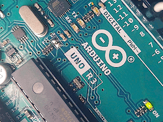
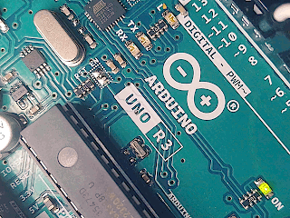
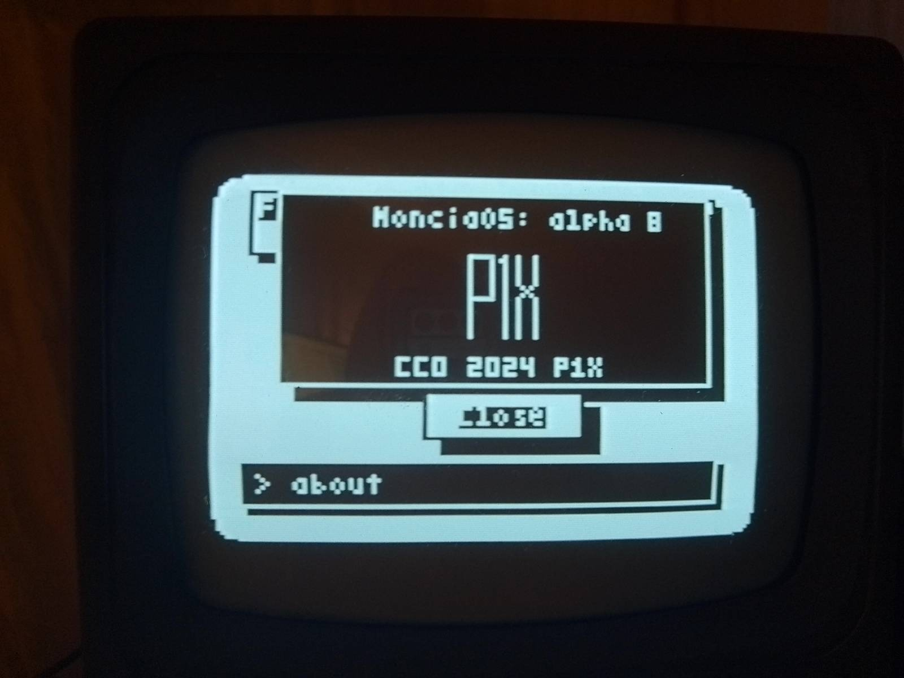
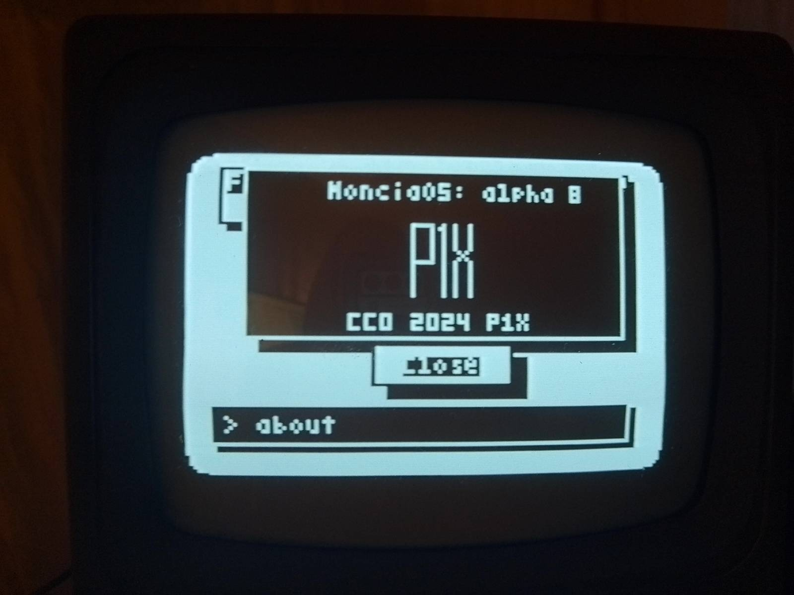

Description
Moncia is based on an 8-bit microcontroller (Arduino Uno) and features a home-made operating system. It accepts input from a regular PS/2 keyboard and outputs black & white images to a TV. The user interface is graphical.
I've always wanted to create my own operating system, but undertaking such a project on modern hardware is incredibly challenging due to its complexity and the extensive requirement for drivers to facilitate hardware communication. To realize this ambition, I decided to construct a simpler solution: an eight-bit computer capable of keyboard input and output to an old-school TV. This system is based on the Arduino Uno, which is not only affordable and accessible but also relatively easy to assemble from off-the-shelf components. The simplicity of connecting or soldering these components together, combined with the plethora of available libraries, greatly aids the development process. Currently, I'm utilizing two critical libraries for input (PS2Keyboard) and output (TVout) functionalities.
Gallery
Hardware

 

OS/Software


 

Code Repository
Check out the code on GitHub:
GitHub Repository